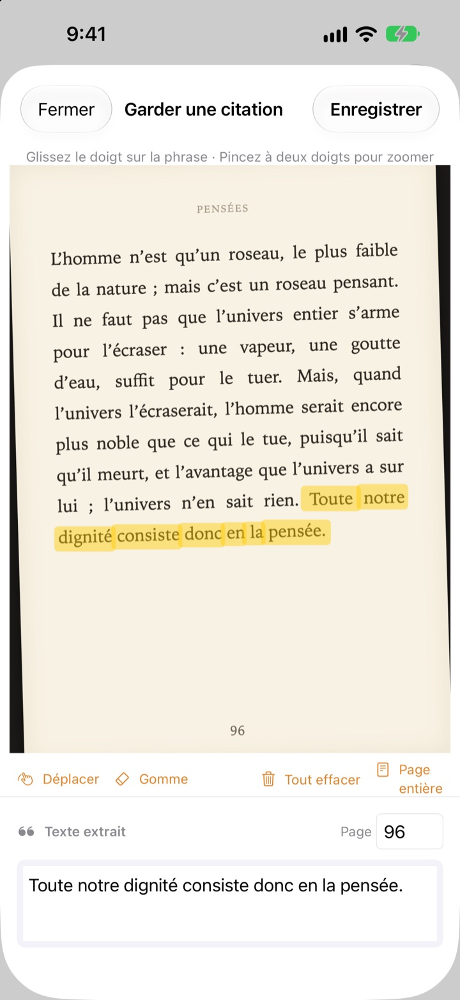
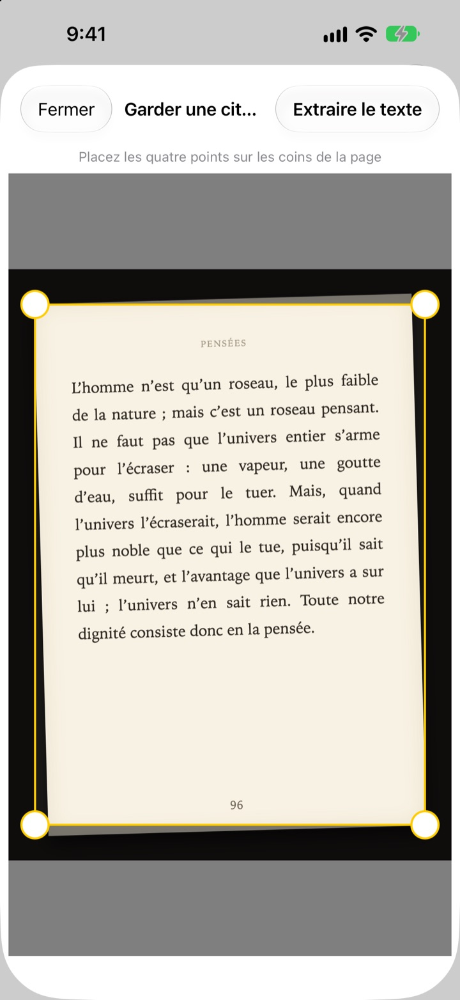
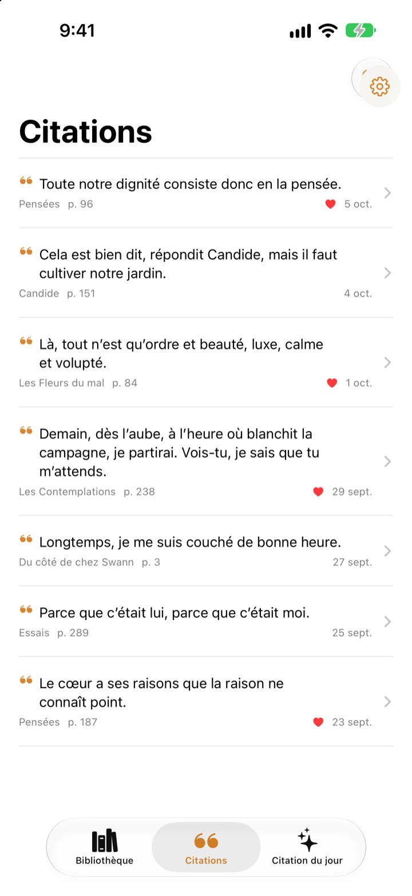
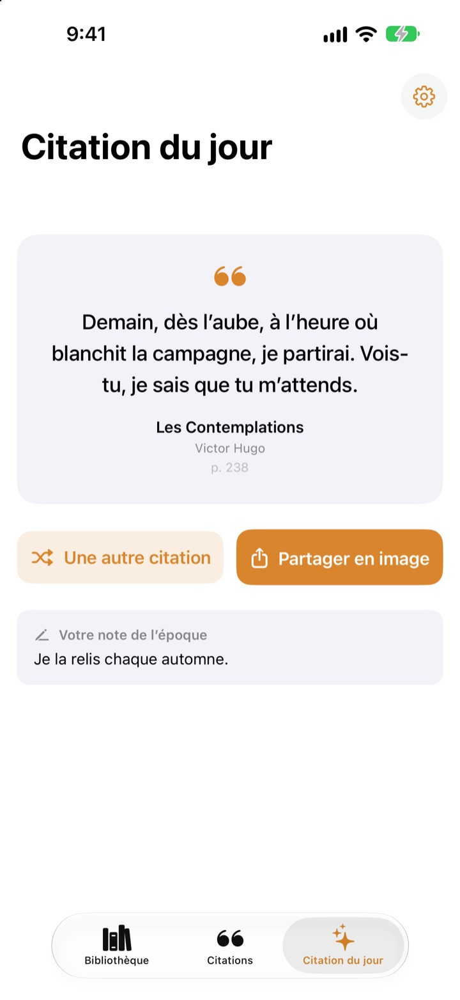

Souligner un livre,
sans stylo
Photographiez la page, passez le doigt sur la phrase qui vous touche : seule cette phrase est enregistrée en texte, avec le livre et le numéro de page.
Toutes les fonctionnalités sont gratuites, sans publicité.

Essayez par vous-même
Passez le doigt ou la souris sur n’importe quelle phrase de la page ci-dessous. Seuls les mots que vous parcourez s’ajoutent à la carte.
Où finissent les belles phrases ?
Le livre vient de la bibliothèque, impossible d’y écrire. La photo de la page se perd parmi des milliers d’autres dans la photothèque. Recopiée dans une app de notes, la phrase arrive rarement avec son titre et son numéro de page. Bookmark Shot garde la phrase, le livre et la page en deux gestes : une photo, puis un glissement du doigt.
Photo de travers, page bien droite
Après la photo, placez les quatre coins : même une page prise de biais est redressée comme une feuille à plat. Des lettres plus nettes, c’est une meilleure reconnaissance.
Les photos déjà dans votre photothèque fonctionnent aussi.

Toutes vos citations au même endroit
Vos livres se rangent dans une bibliothèque de couvertures, vos citations dans une seule liste. Cherchez par phrase, par note ou par titre, et mettez un cœur sur celles que vous voulez relire.
Ajoutez un livre d’une seule photo de couverture. Le titre et l’auteur sont lus pour vous, et l’ISBN aussi si le code-barres de la quatrième de couverture est visible.

Retrouvez les phrases oubliées
La citation du jour vous rapporte chaque jour l’une de vos citations, avec la note que vous aviez laissée. Gardez-la sur l’écran d’accueil ou l’écran verrouillé grâce à un widget.
Coup de cœur ? Transformez-la en carte façon papier et partagez-la.

Trois étapes pour commencer
- 1
Photographiez la couverture
Le titre et l’auteur sont remplis. Modifiez-les avant d’enregistrer si besoin.
- 2
Photographiez la page
Placez les quatre coins, elle se redresse.
- 3
Surlignez la phrase
Le numéro de page est repéré et enregistré avec elle.
Les outils de l’écran de surlignage
- Glisser le doigt
- sélectionne uniquement les mots parcourus
- Pincer
- zoome pour surligner plus précisément
- Déplacer
- fait glisser la page agrandie
- Gomme
- retire les mots surlignés
- Tout effacer
- supprime tous les mots sélectionnés
- Page entière
- garde tout le texte de la page
- Champ de page
- le numéro de page repéré, modifiable
Avec VoiceOver, touchez deux fois une ligne pour l’ajouter ou la retirer.
Toutes les fonctionnalités sont gratuites
Gratuit
- Ajout de livres par la couverture, ISBN par le code-barres
- Redressement des pages et surlignage au doigt
- Numéro de page automatique
- Bibliothèque, recherche de citations et favoris
- Citation du jour avec widgets pour l’écran d’accueil et l’écran verrouillé
- Partage sous forme de carte
- Synchronisation iCloud
Soutenir le développeur
- Laissez un petit pourboire depuis les Réglages, si le cœur vous en dit
- Les pourboires ne débloquent rien. L’app reste la même
Ni publicité, ni abonnement.
Questions
Mes photos ou mes citations sont-elles envoyées quelque part ?
Non. La reconnaissance du texte se fait entièrement sur votre appareil avec Apple Vision, et vos photos et citations ne partent jamais vers un serveur. Elle fonctionne aussi hors connexion. Pour en savoir plus, consultez la politique de confidentialité ci-dessous.
Quelles langues l’app sait-elle lire ?
La reconnaissance du texte est assurée par iOS, sur votre appareil. Elle lit les livres en coréen, anglais, japonais, chinois, russe et dans la plupart des langues d’Europe de l’Ouest et, avec les versions récentes d’iOS, aussi en thaï, vietnamien, turc, indonésien, polonais, tchèque, néerlandais et dans les langues nordiques. Le grec n’est pas encore reconnu.
Comment ne choisir que la phrase que je veux ?
Après avoir photographié la page, passez le doigt sur la phrase comme avec un surligneur : seuls ces mots sont sélectionnés. Pincez pour zoomer et gagner en précision. Il y a aussi la gomme, « Tout effacer » et « Page entière ».
Le titre ou l’auteur est mal reconnu.
La reconnaissance de la couverture se fie à la taille des caractères, elle peut donc se tromper sur des couvertures très décorées. Vous pouvez corriger le titre et l’auteur avant d’enregistrer le livre.
Le numéro de page est faux.
Il est lu à partir des chiffres au bord de la photo. Corrigez-le simplement dans le champ de page avant d’enregistrer.
Puis-je retrouver mes citations sur plusieurs appareils ?
Oui. Si vous êtes connecté à iCloud avec le même compte Apple et qu’iCloud Drive est activé, vos livres et citations se synchronisent automatiquement.
Comment ajouter le widget ?
Maintenez le doigt sur l’écran d’accueil, touchez Modifier > Ajouter un widget, puis choisissez Bookmark Shot. Pour l’écran verrouillé, maintenez le doigt dessus, puis touchez Personnaliser. La citation du jour s’y affiche.
L’appareil photo ne fonctionne pas.
Vérifiez dans Réglages > Bookmark Shot que l’accès à l’appareil photo et aux photos est autorisé. Pour prendre des photos, il faut un vrai iPhone.
De quoi ai-je besoin ?
D’un iPhone sous iOS 17.0 ou version ultérieure.
Comment vous contacter ?
Envoyez un retour depuis l’écran Réglages (roue dentée) de l’app ou écrivez-nous à l’adresse ci-dessous. Nous répondons généralement sous deux ou trois jours.
Une question, une suggestion ? Écrivez à leeo@kakao.com.